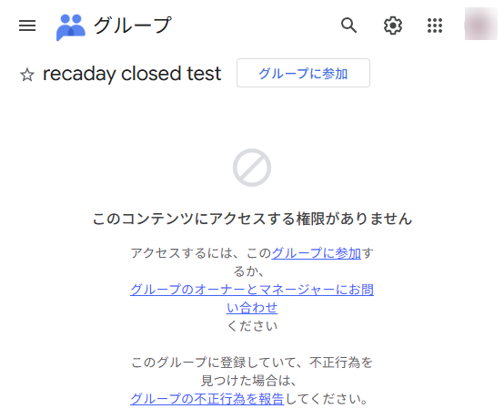
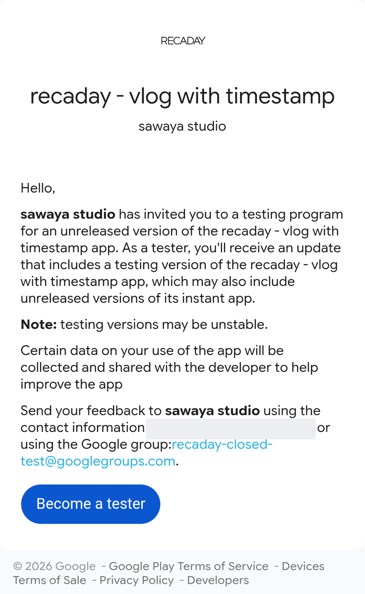

Closed テストへの参加方法
How to join the closed test
Closed テストへの参加方法
How to join the closed test
-
1
Google グループに参加してください
Join the Google Group
Google グループに参加 Join the Google Group押すとこの画面が出ます
This is the screen you will see

ここは無視 Ignore this 1- 1「このコンテンツにアクセスする権限がありません」は無視して、 上の グループに参加 を押してください。
- 1Ignore the message in the middle of the page and press Join group at the top.
The screenshot is in Japanese. Google Groups follows your own account's language, so your wording will differ — the button is in the same place.
-
2
下記 URL より Google Play にアクセスしてインストール
Open Google Play from the link below and install
Google Play でテストに参加 Opt in on Google Play押すとこの画面が出ます
This is the screen you will see

1- 1Become a tester を押します。
- 2表示が You are a tester. に変わったら、 そこに出る download it on Google Play からインストールします。
- 1Press Become a tester.
- 2Once it says You are a tester., install from the download it on Google Play link that appears.
このページは英語で出ます（日本語には切り替わりません）。 ストアで「アイテムが見つかりません」と出たときは、 数分おいてから開き直してください。
If the store says the item cannot be found, wait a few minutes and open it again.
-
3
SNS などに共有するときは #recaday というハッシュタグと Instagram アカウント @recaday_app へのリプライもしてくれると嬉しいです！
When you post about it, we would love a #recaday and a reply to @recaday_app on Instagram!
※ 枠の中は実際の画面です。金色の枠・番号・矢印だけ足しています。
顔写真と連絡先のメールは伏せてあります。
The screens above are real. Only the gold outline, numbers and arrows
were added.
The profile picture and contact email are blurred.